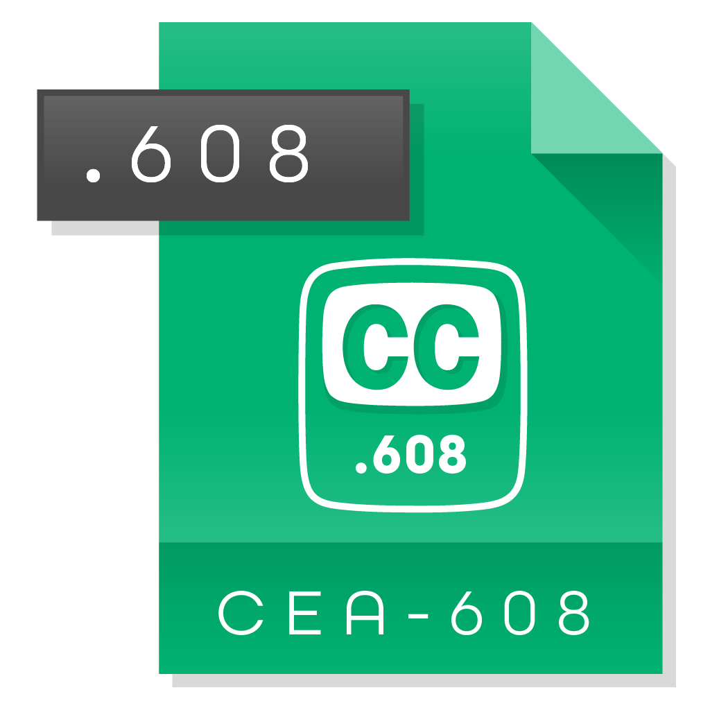
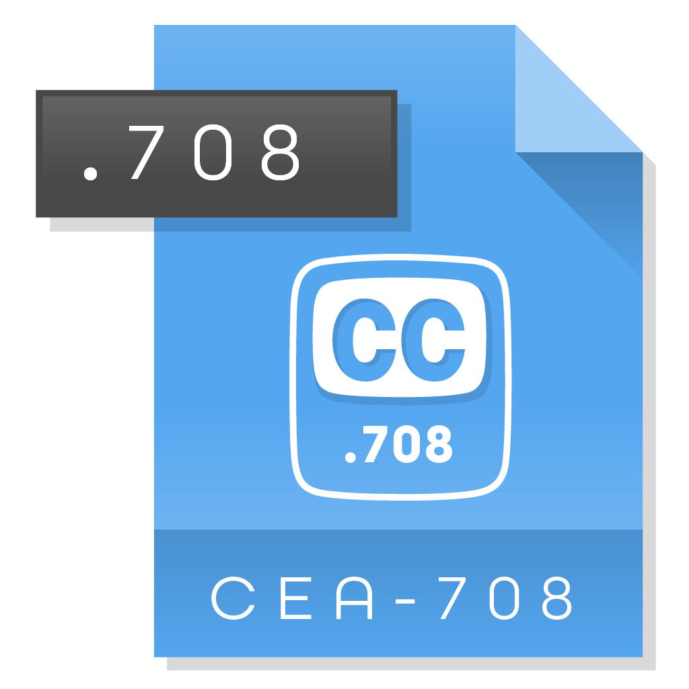

Introduction Last updated: 2019-06-01
Install Now: https://github.com/Comcast/caption-inspector
Caption Inspector was created to be an open and accessible toolset used to decode and validate Closed Captions (CC) content from a video assets or caption file.
Closed Captioning Quality is required in many industries, companies, and countries for the sake of accessibility. Caption Inspector provides the necessary service of validating Closed Captioned content, and is especially useful when sharing content between Content Providers and Distributors, who then in turn, make the content available to Consumers.
| Property | Details |
|---|---|
| Developer/Author: | Rob Taylor, Principle Engineer at Comcast |
| Repository: | https://github.com/Comcast/caption-inspector |
| Software Version: | 1.0 |
| Build Status: | Success |
| License: | Apache License 2.0* |
| Created: | 2018 – 2019 |
| Published | July, 2019 |
*Apache License 2.0
A permissive license whose main conditions require preservation of copyright and license notices. Contributors provide an express grant of patent rights. Licensed works, modifications, and larger works may be distributed under different terms and without source code.
Overview
Closed captions were created to assist in comprehension. Caption Inspector extracts and decodes Closed-Captions (CC) from various Video or Caption File Formats to validate and ensure Closed Captioning is available.
The Caption Inspector project builds a C library, C executable, and Docker image that can be used to extract and decode CC.
Supported Formats
Caption Inspector Supports CEA-608 and CEA-708 in MPEG-2 and MPEG-4 (.mpg, .ts, and .mp4 containers), MCC (MacCaption Closed Captions), and SCC (Scenarist Closed Captions) files. For this, FFMPEG is required*.

PURPOSE
Closed captions were created to assist in comprehension for those who are deaf or hard of hearing. In other cases these are used as a tool by those learning to read, or learning to speak a non-native language. And, for anyone to use in an environment where the audio is difficult to hear or is intentionally muted.
See Expected Quality below for the purpose in creating this software.
Caption Inspector Overview
Decoding and Examining the Closed Captioning
Use Caption Inspector to validate video content adheres to expected Specifications, Compliance Policies and/or laws.
Television Decoder Circuitry Act&
Communications and Video Accessibility Act
"Closed captioning has been provided on a voluntary basis by many movie producers, studios, and distributors for movie videos and DVDs produced for sale or rent."
"The Internet is the new frontier for captioning. The law is generally clear that government agencies must make their websites accessible. The 21st Century Communications and Video Accessibility Act (“CVAA”) expanded the scope of devices that must display captions under the Television Decoder Circuitry Act to all video devices that receive or display video programming transmitted simultaneously with sound, including those that can receive or display programming carried over the Internet. The NAD was a leading member of the Coalition of Organizations for Accessible Technology (“COAT”) which was instrumental in drafting and getting CVAA passed."
- National Association of the DeafREFERENCES: https://www.nad.org/resources/technology/captioning-for-access/when-is-captioning-required/ https://en.wikipedia.org/wiki/Closed_captioning#Legislative_development_in_the_U.S.
Caption Inspector decodes the Closed Captioning Data into two basic types of output files.
- The first type (demultiplexed) has the Closed Captioning Data demultiplexed into output files for each service/channel with closed caption tags and text in the file. Simply put, demultiplexed Closed Captioning Data exists in external files.
- The second type (multiplexed) has all of the Closed Captioning Data decoded in place, still multiplexed together.
Developer Reference
As a extra benefit the Caption Inspector Codebase can be utilized as a reference. Developers can leverage the implementation of the Closed Captioning code without knowing the exact Specifications by examining the output and logs.
Caption Inspector has a plugin pipeline architecture that can be configured in various ways and allows the user to add new plugins to perform various transformations. Currently, the following are the main use cases that the Caption Inspector Software covers:
- Pulling Captions from a Video Asset and writing them to an MCC Caption File, a CEA-608 Decode File, a CEA-708 Decode File, and a Closed Caption Descriptor Decode File.
- Decoding a MCC Caption file and writing the decoded captions into a CEA-608 Decode File, a CEA-708 Decode File, and a Closed Caption Descriptor Decode File.
- Decoding a SCC Caption file and writing the decoded captions into a MCC Caption File, a CEA-608 Decode File, and a Closed Caption Descriptor Decode File.
The Expected Quality of Captions
Today, there is a gap in the process of Closed Caption Quality production caused by errors within the CC content. Prior to this software, content delivered to Distributors could not be easily validated without going through (watching) all of the video content, frame by frame. This makes checking content impractical, and its often overlooked when distributed.
This has caused the content to be delivered with Closed Caption errors. As a result, this content is then provided to consumers with errors, putting the Distributors at fault for bad or faulty content. Regardless of where the responsibility lies, whether the Content Provider, or the Distributor, with Caption Inspector each video can now be validated by each party in a relatively short period of time. Thus, Content Providers can be certain of what they deliver, and Distributors do not have to accept faulty content, and be at risk of providing a low-quality product.
Industry Accepted Guidelines
The following are the accepted industry guidelines and best practices for quality: (https://dcmp.org)
- Accuracy Errorless captions are the goal for each production
- Consistancy Uniformity in style and presentation of all captioning features is crucial for viewer understanding.
- Clarity A complete textual representation of the audio, including speaker identification and non-speech information, provides clarity
- Readable Captions are displayed with enough time to be read completely, are in synchronization with the audio, and are not obscured by (nor do they obscure) the visual content.
- Equality of Accessibility Equal access requires that the meaning and intention of the material is completely preserved.
How is it Used
Caption Inspector is a Command Line Interface (CLI) tool that takes a video or caption file as input, extracts the embedded data, and outputs this to a text file, formatted in either a standard `.mcc`, or `.scc` file format. Yet, this tool is not simply an extractor of embedded data, but a primary purpose of this tool is to validate the embedded transcript for errors.
Processing content will create several files, which includes:
- Content Descriptor Document (CDD) File. A single CDD `.ccd file` shows each frame's binary caption data as hex values followed by decoded characters and control-codes (much like how the output of the Linux `xxd` command shows the hex values followed by ascii).
- And, Individual .608 and .708 files are also generated for each channel/service, separating the binary caption data into frame-indexed, service-specific, human-readable text and control-codes for analysis.
Prerequisites
Basic Software and computer skills are required for installation and usage.
Prerequisites to Building the Caption Inspector Executable
-
FFMPEG*
Caption Inspector requires FFMPEG to be installed on your machine. Please download the appropriate version of FFMPEG from the website and install it on your machine. Caption Inspector is known to run with FFMPEG Version 4.0.2..
Get https://ffmpeg.org/download.html -
Drop Frame
While not required, Caption Inspector leverages a tool called MediaInfo to determine whether or not an asset is, or is not, Drop Frame. You can download the command line version of MediaInfo. Caption Inspector is known to run with MediaInfo Version 18.12.
Get https://mediaarea.net/en/MediaInfo/Download
Developer Overview
The Caption Inspector project builds a C library, C executable, and Docker image that can be used to extract and decode Closed-Captions from various Video or Caption File Formats. Caption Inspector Supports CEA-608 and CEA-708 in MPEG-2 and MPEG-4 (.mpg, .ts, and .mp4 containers), MCC (MacCaption Closed Captions), and SCC (Scenarist Closed Captions) files.
Two Basic Types
Caption Inspector decodes the Closed Captioning Data into two basic types of output files. The first type has the Closed Captioning Data demultiplexed into output files for each service/channel with closed caption tags and text in the file.
DATA
Type
Make your data available to consume by publishing your data to one of our fully managed platforms.
Type
Type
Consume and store your data to our data lake, a remote database, or to another location.
The second type has all of the Closed Captioning Data decoded in place, still multiplexed together. Beyond the current use case of decoding and examining the Closed Captioning, the Caption Inspector Codebase can be leveraged as a reference implementation of the Closed Captioning Specifications which would allow a developer to not have to understand the specifics of the specs just to access, manipulate, and modify the encoded Closed Captioning.
Installation & Start Up
Caption Inspector Executable
This is a one-time installation. When the Executable has been installed you will only need to start up your server to be able to use the tools. If you shutdown, and restart your computer, you will need to restart your server from within Docker, unless you configure Docker to automatically restart at Login.
Future updates will require a reinstallation along with steps we will at that time provide and will likely be a similar process. This step is a one-time set up process. Building the Caption Inspector Executable can be done at the root level, or at the "src level". Once it has been built, Caption Inspector can be used to decode the captions from a test file.
Note
A person with root level access is called an "administrator," "root user" or "superuser." While "root level" access is considered a "high" privilege level for the user, it is at the same time considered "low" level access to the system.
Building and Running Locally
Caption Inspector requires FFMPEG to be installed on your machine. Please download the appropriate version of FFMPEG from here and install it in your machine.
Note
Caption Inspector is known to run with FFMPEG Version 4.0.2.
While not required, Caption Inspector leverages a tool called MediaInfo to determine whether or not an asset is, or is not, Drop Frame. You can download the command line version of MediaInfo from https://mediaarea .net/en/MediaInfo/Download
Note
Caption Inspector is known to run with MediaInfo Version 18.12.
Using the CLI
make caption-inspector
./caption-inspector -h
./caption-inspector -o .test/media/BigBuckBunny_256x144-24fps.ts
./caption-inspector -o .test/media/Plan9fromOuterSpace.scc -f 2400
./caption-inspector -o .test/media/NightOfTheLivingDead.mcc
| Option | Usage |
|---|---|
| - h |
Running with the Running against the video file |
| -o |
Running against the caption file Running against the caption file |
Building and Running in a Docker Container
Obviously you need docker running on your local machine to build. Building inside of a docker image will remove the need to install any dependencies, but comes at the expense of a slightly more complicated command line execution.
Using the CLI with Docker
make docker
docker run -t caption-inspector -h
docker run -tv $(pwd):/files caption-inspector -o /files /files/test/media/BigBuckBunny_256x144-24fps.ts
docker run -tv $(pwd):/files caption-inspector -o /files /files/test/media/Plan9fromOuterSpace.scc -f 2400
docker run -tv $(pwd):/files caption-inspector -o /files /files/test/media/NightOfTheLivingDead.mcc
In the docker run command, your current working directory will be remapped to /files inside of the container,
so you will need to prefix your input and output paths to that so that it can place the files in the correct spot. For this example, the
output file is located in the current directory ./ and the input file is located in a directory underneath the current
directory, specifically ./test/media/*.
Regression Testing
While the testing is not complete yet, there are several Unit Tests, Integration Tests, and System Tests that run on the Caption Inspector Codebase. These are intended to be run as integration tests and verify that nothing has broken as a result of a change. They are run as part of a pull request, but for debugging purposes they can also be run locally (even in an IDE) before a pull request is issued. The easiest way to run these is inside of docker, as the dependencies are handled for you. But if you need to run them with an IDE/debugger, they can also be run from the command line.
To run the regression tests from inside of docker, simply call make docker-test at the root directory. This will build the
docker image and run the tests. The output generated by this activity can give information about any test case that does not pass, but
even more useful is an HTML file that is the output of the test. It contains all of the tests, and their statuses. It is in the root
directory and takes the form <date>__<time>_test_output.html. The build system will attempt to open it in a
browser on your local machine. If there is a problem with that operation you can open the file manually from a browser.
To run the regression tests from the command line, you need to install Xunit Viewer, which can be found Xunit Viewer . Xunit Viewer is the application that takes the Xunit XML and converts it into a beautified HTML format. Once you have Xunit Viewer installed, or if you ignore it, you just need to build and run the regression tests from the test directory.
cd test
make test
The tests are a mix of C and Python, depending on which made more sense for the specific test. The build system will aggregate all of the results from the tests in both languages.
Leveraging the Caption Inspector Functionality from Python
C was chosen as the language for Caption Inspector because of interoperability with FFMPEG and ease of
implementation of the specifications. While that choice made sense, there are lots of reasons to want to
access this functionality as a library from a higher level language than C. To that end Python bindings,
using CTypes, were added to the C functionality which can be compiled into a shared library and referenced
from Python code. To use this functionality you just need to build the shared library using the command:
make sharedlib. Then leverage the file python/cshim.py inside of your Python code, making sure that it knows where to find the shared library with the Caption Inspector Code.
The Caption Inspector code that makes this possible, and the library it generates, can likely be reused for other high level languages such as Java/JNI, Golang/Cgo, etc.
Warning
No work has been done in those languages [Java/JNI, Golang/Cgo, etc], but if you do end up using it in a new language, please consider submitting the results back to the repository.
Caption Inspector Artifacts (FILES)
There are several different types of artifacts that can be generated by Caption Inspector. They get output when an artifact directory gets specified as a command line argument to Caption Inspector.
File Types
| FILE TYPE | DESCRIPTION |
|---|---|
|
 |
CEA-608 Decode File ( .608)Caption Inspector will output decoded CEA-608 as text with inline tags from the 608( https://en.wikipedia.org/wiki/EIA-608. Each Channel of 608 captions that are found are written to their own file. Each file contains the channel number
appended to the end of the filename.
This happens as a result of finding 'any' captions for a specific channel and does
not necessarily indicate that a specific channel is a valid channel with
captions. |
|
 |
CEA-708 Decode File ( .708)Caption Inspector will output decoded CEA-708 as text with inline tags from the 708 https://en.wikipedia.org/wiki/CEA-708. Similar to 608, each Service of 708 captions that are found are written in their own file, regardless of whether or not there
are full and valid captions associated with the specific service. |
|
|
Closed Caption Descriptor File ( .ccd)Caption Inspector will output a single Closed Caption Descriptor File for each asset that it processes. The Closed Caption Descriptor Files are intended to be annotated hex dumps of the closed captioning descriptors located on every frame of video or every line of an MCC file. Unlike the other artifacts, the CCD files are decoded inline, all channels and services have been left multiplexed together and have traceability back to the original/unmodified hex that was extracted from the asset or caption file. The Closed Caption Descriptor File contains a decoded binary representation of Closed Captioning Data. |
|
|
Media Info File ( .inf)Caption Inspector runs Media Info as part of its processing. This is used primarily to best determine whether an asset is a
Drop Frame asset or not. Additionally, Media
Info compiles an amount of information about the asset. This file is the output of that information |
|
|
Debug File ( .dbg)Caption Inspector has a logging mechanism that aggregates information, warnings, and errors related to the processing of the asset. It logs warnings and errors both for its own internal operations, and also for where the captions it encounters differ from the specs. These logs can be used to both debug problems with the Caption Inspector Application and also with the captions in the asset. |

Understanding Closed Caption Descriptor
Closed Caption Descriptor File (.ccd)
Caption Inspector will output a single Closed Caption Descriptor File for each asset that it processes. The Closed Caption Descriptor Files are intended to be annotated hex dumps of the closed captioning descriptors located on every frame of video or every line of an MCC file.
Unlike the other artifacts, the CCD files are decoded inline, and all channels and services have been left "multiplexed" together and have traceability back to the original/unmodified hex that was extracted from the asset or caption file. The Closed Caption Descriptor File contains a decoded binary representation of Closed Captioning Data.
CCD Details
Each grouping of text immediately following a timestamp represents the Closed Captioning Data - `cc_data()` that would be associated with a frame of video, or a line from an MacCaption (MCC) file. Each "line" contains the same groups of elements: Timestamp, Hex Data, Decoded Data, Supplemental Decoded Data, and Text (if it exists in the line). These elements can describe both CEA-608 and CEA-708 data contained in the Closed Captioning Descriptors.
Note
A multiplex or mux (called virtual sub-channel in the United States and Canada, and bouquet in France) is a grouping of program services as interleaved data packets for broadcast over a network or modulated multiplexed medium. The program services are split out at the receiving end.
About Closed Caption Windows
Timestamp
On the leftmost portion of the document is the timestamp. Each Closed Caption Data (CCD) packet has a timestamp, which corresponds with the frame of the asset containing the CCD packet. For readability sake, the timestamp is only printed out when specific Global Control Codes are encountered. There are three types of timestamps: Frame Number, Drop Frame Number, and Millisecond. This refers to the last number, and the symbol that separates it from the second to last number.
There are three types of timestamps:
- Frame Number
- Drop Frame Number
- Millisecond
Drop Frame Number Timestamps format
`<Hour>:<Minute>:<Second>;<Frame>`
Frame Number Timestamps format
`<Hour>:<Minute>:<Second>:<Frame>`
Millisecond Timestamps format
`<Hour>:<Minute>:<Second>,<Millisecond>`
The Frame Number vs. Drop Frame Number is differentiated by using either a colon `:` for Frame or a semi-colon`;` for Drop Frame.
For a description of what Drop Frame is, and why we have it see: http://www.bodenzord.com/archives/79
Aggregated Text
If there is text detected in the line, it will be pulled together and gets labeled with the Channel or Service Number that it is associated with. This is done to easily be able to see what the text spells out.
The Basis for Reading Output - Hex Data
The Hex Data representation of the Closed Captioning Construct is intended to be the most direct representation of the `cc_data()` structure, which is comprised of the following fields:
01. { cc_valid }{cc_type}:{cc_data_1}{cc_data_2}
02. { F | P | X }{ S | D }:
The `cc_valid` field determines whether the subsequent fields are to be considered valid and thus be interpreted. The value will either be `F` for Valid Line 21, `P` for Valid DTVCC, or `X` for Invalid.
The `cc_type` field determines the type of data that will be in `cc_data_1` and `cc_data_2`. This field can have the following values:
'1': Line 21 Field 1 Data,
'2': Line 21 Field 2 Data,
'S': DTVCC Packet Data Start,
'D': DTVCC Packet Data.
The fields `cc_data_1` and `cc_data_2` are the actual two bytes of payload data, which are represented in hexadecimal.
Decoded Data and Supplemental Decoded Data
Decoded Data and Supplemental Decoded Data are intended to be the inline decode of the corresponding Hex Data using the 608 and 708 Specs. The Decoded Data is a high level decode of the code referenced by the hex value, and the supplemental decoded data describes the flags and values referenced by the hex value.
Supplemental decoded data plays a larger role in 708 because more information is crammed into bit fields in the magic numbers.
CEA-608
NULL Data (CEA-608)
CEA-608 tends to have its fill data be NULL Data. NULL Data is just `0x00` with a parity bit in the msb position. Since this is placed in specific to 608, it gets decoded to NULL (as opposed to 708 NULL Data, which is shown as a blank line).
Global Control Codes (CEA-608)
There is not much decoding to do around Global Control Codes in CEA-608. Basically, it is just the Channel Number that gets decoded and added to the Decoded Data. The Supplemental Decoded Data field is basically used to try to spell out the control code as much as space permits, rather than using the code that is found in the Decoded Data.
These commands apply to the
Window, or the caption inside theCurrent Window.
Preamble Access Codes (PAC) (CEA-608)
PACs come in two types, Address PACs which describe where the cursor should be located, and Style PACs which describe what style/color should be used when writing to the screen. The Decoded Data field denotes that the decoded code is a PAC, and which channel it is associated with. The Supplemental Decoded Data field spells out the Address and Style information of the PAC.
Mid Row Style Change Code (CEA-608)
Midrow Style Changes come in two types, Foreground and Background Style Change. Additionally, the Foreground
MidRow Style Change can indicate that the text is Partially Transparent, and the Background Midrow Style Change can indicate that the text is underlined.
Tab Control Code (CEA-608)
Tab Controls, in combination with an Address PAC can point the cursor to anywhere inside of the text window.
CEA-708
Packet Structure
CEA-708 is able to support 64 services, rather than the 4 channels in 608, in part by defining a variable length packet structure and then associating each group of packets to a specific service.
Warning
The packet structure is made up of a Packet Start followed by a number of Data Packets. Receiving another Packet Start ends the current packet and tells the closed captioning service to process all of the data that was in the previous packet structure.
To make the start of the packet structure stick out in the decoded data, it has an arrow on the Packet Start: `<-`.

Spurious Data (CEA-708)
When a byte is unexpected, it gets printed out in the below format. For this example, two unexpected 0 bytes were encountered.
Set Current Window (CEA-708)
Set Current Window specifies the window to which all subsequent window style and pen commands are directed.

Define Window (CEA-708)
Define Window creates a window and initializes the window with the parameters listed in the command.
Display Windows (CEA-708)
Display Windows causes the specified windows to be visible.
708 Display Window
Clear Windows (CEA-708)
Clear Windows removes any existing text from the specified windows in the window map and replaces the entire window with the window fill color.Delete Windows (CEA-708)
Delete Windows removes all specified windows.
Hide Windows (CEA-708)
Hide Windows causes the specified windows to be removed from the screen.

Toggle Windows (CEA-708)
Toggle Windows causes all specified windows to toggle whether they are displayed or hidden.
Set Window Attributes (CEA-708)
Set Window Attributes assigns the specified style attributes to the current window.

Note
You need to multiply the high bit (value above the 'H') by 4 and add it to the low bits (value above the 'L') to get the final code for the Border Type.
Set Pen Attributes (CEA-708)
Set Pen Attributes assigns pen style attributes for the currently defined window. Text written to the current window will have the attributes specified by the most recent Set Pen Attributes command written to the window.
Set Pen Color
Set Pen Color assigns the pen color attributes for the current window. Text written to that window will have the color attributes specified by the most recent Set Pen Color command.

Set Pen Location (CEA-708)
Set Pen Location repositions the pen cursor for the current window, as specified by the current window ID.
Justification Rules (CEA-708)
When the window justification type is 'left' the next group of text written to the current window will start at the specified row and column, and justification will be ignored.
When the window justification type is not left and the print direction is left-to-right or right-to-left, the column parameter shall be ignored.
Windows - CEA-708
When the window justification type is not left and the print direction is top-to-bottom or bottom-to-top, the row parameter shall be ignored.
When the window justification type is not left, text shall be formatted based upon the current window justification type.

Delay (CEA-708)
Delay suspends interpretation of the command input buffer. Once the delay expires captioning resumes.
Delay Cancel (CEA-708)
Delay Cancel terminates an active Delay command and captioning resumes.

Reset (CEA-708)
Reset command reinitializes the service for which it is received.

Reserved (CEA-708)
Reserved Codes are just that, Reserved Codes. They are not believed to be used.
Reference Tables
Window Commands
| Command | Description | Attributes | Properties |
|---|---|---|---|
| CW0 | Current Window CW0, CW1, CW2, CW3, CW4, CW5, CW6, CW7; The "Current Window" sets the context to set attributes and properties for within. | window: priority, anchor number, anchor vertical, anchor horizontal, row count, column count, locked, visible, centered, styleID | |
| DF0 | Delete Window #: DW0, DW1, DW2, DW3, DW4, DW5, DW6, DW7; Clear the content in window, and Hide it. | NA | NA |
| DLY | Delay: Delay Cancel in tenths of seconds | number: 0.1 | NA |
| DLC | Delay Cancel: Delay Cancel in tenths of seconds | number | NA |
| DLW | Delete Window: Delete (the Current) Window | NA | NA |
| ETX | EndOfText: End of Text for the captions. Captions can span unto 15 rows. ETX identifies the end of a given set of text. The next will reset and start a new set. | NA | NA |
| HDW | Hide Window: Hide (the Current) Window | NA | NA |
| RST | Reset Window: Reset (the Current) Window | NA | NA |
| SPA | Set Pen Attributes : (Within the context of the "Current Window") : (Font Attributes: size, underline, italic, script, bold, foreground color, foreground opacity, background color, background opacity, edge color, edge type. ) | font | size, underline, italic, script, bold, foreground color, foreground opacity, background color, background opacity, edge color, edge type |
| SPC | Set Pen Color | background, foreground, border, opacity | Color: [white, black, green, blue, cyan, red, yellow, magenta] |
| SPL | Set Pen Location | Row, Column | Row: [0-15], Column: [0-32] |
| SWA | Set Window Attribute: Set Window Attributes such as justify, print direction, scroll direction, WW: word wrap, display effect, effect direction, effect rate, fill color, border color, border type, opacity | PD: Print Direction, SD: Scroll Direction, JD: Jump Direction, LtoR: Left to Right, RtoL: Right to Left, WW: Word Wrap, Snap: 1.0 seconds | justify, print direction, scroll direction, word wrap, display effect, effect direction, effect rate, fill color, border color, border type, opacity |
| TGW | Toggle Window : Toggle (the Current) Window | NA | NA |
CEA-608/CEA-708 Codes
The Hex Data specifies the hexadecimal equivalents for Channels 1 through 4 found in the SCC file, using the standard ISO 8859-0 Character Set. Decoded Data refers to Channel Number (1 - 4).
| Code | Name | Description |
|---|---|---|
| {RCL} | Resume Caption Loading | Starts a pop-on caption. All following non-global codes and characters will be applied to the off-screen buffer until {EOC} is received. |
| {BS} | Backspace | Backspace Overwrites the last character. |
| {AOF} | Alarm Off | This code is currently unused. |
| {AON} | Alarm On | This code is currently unused. |
| {DER} | Delete to End of Row | Delete current character and all that follow it on the row. |
| {RU2} | Roll-Up Captions Two Rows | Starts a roll-up caption in rows 14 and 15, unless followed by a PAC and/or TO (which will establish the bottom row). All following codes and characters will be applied directly to the caption screen. This command also clears the screen and buffer of any pop-on or paint-on captions. |
| {RU3} | Roll-Up Captions Three Rows | Starts a roll-up caption in rows 13 and 15, unless followed by a PAC and/or TO (which will establish the bottom row). All following codes and characters will be applied directly to the caption screen. This command also clears the screen and buffer of any pop-on or paint-on captions. |
| {RU4} | Roll-Up Captions Four Rows | Starts a roll-up caption in rows 12 and 15, unless followed by a PAC and/or TO (which will establish the bottom row). All following codes and characters will be applied directly to the caption screen. This command also clears the screen and buffer of any pop-on or paint-on captions. |
| {FON} | Flash On | Flashes Captions on 0.25 seconds once per second. |
| {RDC} | Resume Direct Captioning | Starts a paint-on caption. All following codes and characters will be applied directly to the caption screen. |
| {TR} | Text Restart | Starts a text message at the upper rightmost position and clears the text screen. All following codes and characters will be applied directly to the text screen, which by default has an opaque black background that blocks out the TV signal behind it. Positioning from that point is performed via the {BS}, {CR}, and PAC codes. |
| {RTD} | Resume Text Display | Switches to Text Mode to continue a text message begun with {TR}. |
| {EDM} | Erase Displayed Memory | Clear the current screen of any displayed captions or text. |
| {CR} | Carriage Return | For roll-up caption, move cursor to bottom-left position of caption and move all lines up (deleting top row once it scrolls above window). For Text mode, move down to first column of next row (scrolling everything up if this is the bottom row). Does nothing in paint-on or pop-on captions. |
| {ENM} | Erase Non-Displayed Memory | Clear the off-screen buffer (only affects pop-on captions). |
| {EOC} | End of Caption | Swap off-screen buffer with caption screen. |
Glossary of Terms
Multiplex is a system of transmitting several messages or signals simultaneously on the same circuit or channel, combining all streams into a shared resource. For Closed Captioning, this means that all of the closed captioning data is in a single resource, the video content.
Demultiplex (DEMUX) is the reverse of the multiplex (MUX), which is the process of separating these resources. This is a major part of what Caption Inspector is providing as a service.
Section 508 refers to accessibility law, which requires video broadcasts and many webcasts to be made accessible to the deaf and hard of hearing. Please see the official Section 508 web site for more details. Not directly related to CEA-608 and CEA-708, which are technical standards.
CEA-608 refers to the technical standard for captioning standard-definition NTSC video. It is also commonly referred to as "Line 21 closed captioning".
CEA-708 refers to the technical standards for captioning high-definition video. It is also commonly referred to as the VANC data or "Line 9 closed captioning".
Active Format Description (AFD)is a standard for telling a receiving device how to best frame video. For example, without AFD, a 16:9 signal which contains a pillarboxed 4:3 video would then be letterboxed for display on a 4:3 TV, making a tiny image surrounded by black bars on all sides. With AFD, the TV knows that it can crop the video so that the actual picture fills the whole screen. For more information click here (Wikipedia).
ATSC (Advanced Television Systems Committee) is the digital television (DTV) standard used by broadcasters for HDTV and the digital broadcast of SD in the United States and Canada. ATSC supports closed captioning (608 and 708) in the metadata of the video signal.
Burn-in refers to a graphic, text, or image that is superimposed on video, and thus becomes part of the video itself. Closed captions are not burned in, since they can be turned on and off, unlike open captions and many subtitles which cannot.
A .cap file can refer to many different types of files, so you need to be careful when using them. Several formats of caption files have the .cap extension, including the popular Cheetah .cap format. A .cap file can also be a project file for CPC Caption maker (PC) which must be opened in CaptionMaker before exporting to another caption format.
A capture card is a piece of hardware for your computer that allows you to bring video into your computer for editing and output back to a physical format like tape. Many capture cards support closed captioning for HD and SD, including ones from Matrox, AJA, and Blackmagic.
CaptionMaker is closed captioning software developed by CPC for the PC platform. CaptionMaker reads and writes all major captioning formats and supports many traditional workflows involving hardware encoders. In addition to broadcast SD video, CaptionMaker encodes captions for web formats like Quicktime, Flash, YouTube, and Windows Media, and also tapeless workflows like MPEG-2 Program Streams.
Closed Captioning is text that appears over video that can be turned on an off using a decoder which is built into most consumer television sets and cable boxes. Closed Captions differ from subtitles in that they contain information about all audio, not just dialogue.
Codec stands for "coder-decoder", it is a method of compressing video in order to strike a balance between file size and quality. Different codecs have different data rates, aspect ratios, and methods of closed captioning in order to achieve this balance. Some examples of codecs are DV, MPEG-2, WMV, H.264, Uncompressed, and ProRes. To watch a video, your computer needs the specific codec that video uses, otherwise it will not play. Not all codecs are available for all operating systems, and they may not be free to use.
A container format is a way to encapsulate video so that it can be viewed in a video player, edited in an non-linear editor, or processed in some other way. Examples of container formats are Quicktime, AVI and MXF.
A decoder is a device that makes enables closed captions to be turned on if they are present in the video signal, essentially turning closed captions into open captions. Typically a decoder is inside your TV or cable box and you can turn captions on using your remote or a setting in the menus. There are also hardware and software decoders available that allow you to preview captions on your computer or a master tape to ensure that they are present.
"Drift" is a term used to describe a specific type of behavior of closed captions. It can either mean they are appearing progressively later than they should, or progressively earlier. Most often, this occurs slowly over the duration of a program, resulting in a discrepancy of over three seconds by the end of an hour. Drift is most often caused by a drop-frame / non-drop discrepancy.
Drop-frame timecode refers to a method of counting timecode in 29.97 fps video. It does not refer to actual frames of video being dropped that would affect video quality. Since 29.97 fps is not exactly 30 fps, when counting in drop-frame certain numbers in the timecode counter are skipped in order to ensure that the timecode will reflect the real-time length of the program.
The counterpart of drop-frame is non-drop which does not skip numbers when counting timecode. To prevent drift, it is important to timestamp in the correct mode (or convert your captions' timecode using CPC software) when closed captioning a 29.97 fps program.
DTV stands for "digital television" and is a general term encompassing digital television around the world to distinguish is from analog television (such as NTSC). In the US the standard for DTV is ATSC.
A data stream that contains either video or audio data, but not both. Usually associated with MPEG video files and given the extension .m2v for video, or .m2a or .ac3 for audio. Elementary MPEG-2 video streams can contain closed caption data. A Program or Transport stream can be demultiplexed, or separated, into its component Elementary streams.
The term "encoder" typically refers to a hardware encoder, but can refer to software encoders as well. A hardware encoder is usually a rack-mounted device that accepts a video signal, marries it to closed captions, and then outputs a new closed captioned video signal, usually resulting in generation loss.
A software encoder, such as MacCaption, can add captions to video without a hardware encoder. You can simply encode captions to video files already present on your computer, or to file formats that will add captions as you output from your NLE with no generation loss.
High Definition is a television standard with either 720 or 1080 lines in the video signal. Closed captioning for HD is sometimes called Line 9 or VANC, and is codified under the 708 standard.
Ruby subtitle formatting is a popular style of formatting that allows viewers to see an annotated description of a word on screen. Typically, the annotation is located above the text and is shown in smaller text size. This formatting is compatible with subtitle burn-in exports such as "Combined Subtitles" and with TTML OTT formated files such as iTunes .iTT.
Line 9 refers to the location of the VANC closed captioning data in an HD video signal. In the full raster, it appears it is the 9th line from the top of the frame.
Line 21 refers to the location of the VBI closed captioning data in an NTSC 720x486 signal. It actually appears on lines 21 and 22 since line 22 is the second field of the closed captioning data.
Live captioning is captioning process used for live webcasts or broadcasts to add captions to video on the fly. It requires several important tools. The first is a source of transcription such as a stenographer or speech recognition software.
Please note, getting speech recognition software to usable levels of accuracy still requires an individual to operate it. That second item required for live captioning is a hardware encoder which will accept the video signal and the closed caption data and combine them for output. Last, you may need captioning software to tie these two things together (especially if you're using speech recognition software).
A live captioning text stream is an output of a live caption text stream to a URL specified in the Live Text Stream Options dialog. This a way to stream live captions to an HTML web page separate from the live video stream.
Live Text Stream can be used in a closed local area network web page or over the world wide internet. Viewers can vide the live text stream on any web browser both on a personal computer or mobile phone.
MacCaption is closed captioning software developed by CPC for the Mac platform. MacCaption reads and writes all major captioning formats and supports the latest closed captioning workflows for Final Cut Pro. In addition to broadcast HD and SD video, MacCaption encodes captions for web formats like Quicktime, Flash, YouTube, and Windows Media, and also tapeless workflows like MPEG-2 Transport Streams, DVCPRO HD and XDCAM.
A .MCC is a MaCCaption closed captioning file, and the only file format that supports both 608 and 708 (SD and HD) closed captioning, unlike .SCC, which only can encode 608 (SD) closed captions. This comprehensive format is being used by several companies for integration in to their closed captioning workflows.
MPEG-2 can refer to not only a video codec, but also a container format. MPEG-2 can come in three different file types, Elementary Streams, Program Streams and Transport Streams. MPEG-2 files are becoming a more common form of video delivery because it allows a broadcaster to put it directly on their server instead of ingesting from tape. MacCaption can add captions to all three forms of MPEG-2 files.
Non-Drop timecode refers to a method of counting timecode in 29.97 fps video. It does not refer to actual frames of video being dropped that would affect video quality. Since 29.97 fps is not exactly 30 fps, when counting in non-drop, the timecode will get progressively further and further behind "real time."
For instance, after 2000 frames a drop-frame counter will display 00:01:06:22, while a non-drop counter will display 00:01:06:20, but the content and real-time length of the video will be the same. The drop-frame counter is slightly ahead because it's goes straight from 00:00:59:29 to 00:01:00:02. To prevent drift, it is important to timestamp in the correct timecode mode (or convert your captions' timecode using CPC software) when closed captioning a 29.97 fps program.
A non-linear editor (NLE) is a piece of software that allows you to edit video by moving pieces of it around in a timeline with multiple layers of video. This is in contrast to linear editing, which forces you to add one piece of video after another to tape in a linear fashion. Many NLEs support closed captioning for HD, SD, or both. Examples of non-linear editors are AVID, Final Cut Pro, Premiere Pro, and Sony Vegas
NTSC (National Television Systems Committee) is the analog television standard for North America, Japan, and some other parts of the world. NTSC supports closed captioning (608 only) on Line 21 of the video signal.
OP-47 (Operational Practice number 47) is a solution for inserting a Teletext ancillary data channel into HD media. OP-47 was originally developed by Australian broadcasters and is now widely used. The data can be stored in the SMPTE 436M track of an MXF wrapper. OP-47 Teletext stores data in selectable pages within magazines (1-8). These can be selected by viewers using menu controls on their TV monitor. Typically, the subtitle data can be stored in magazine 8 page 01, or Teletext 801. Other samples may have Teletext 888, which is magazine 8 page 88. This is according to the SMPTE-RDD8 specification.
Teletext supports Latin, Hebrew, Arabic, Greek, and Cyrillic alphabet. However, it does not support Asian unicode characters such as Chinese and Japanese. CaptionMaker can only insert Latin alphabet Characters into OP-47.
Open captions are captions that do not need to be turned on, they are always visible. This is opposed to closed captions which must be turned on with a decoder. Open captions are actually part of the image itself, this is also known as burned-in captions.
Paint-on captions appear on the screen from left to right, one character at a time. This mode of displaying captions is uncommon except as the first caption of many commercial spots to reduce lag.
Pop-on captions appear on the screen one at a time, usually two or three lines at a once. This mode of displaying captions is typically used for pre-recorded television.
Program Stream is a data stream that multiplexes, or combines, a single video and a single audio stream together. Usually given the extension .mpg, and used for files to be played on a PC, some DVD authoring systems, and some tapeless distribution.
Roll-up captions appear from the bottom of the screen one line at a time, usually with only three lines visible at a time. This mode of displaying captions is typically used by live television like news broadcasts.
SCC stands for "Scenarist Closed Caption", a file type developed by Sonic. SCC files have become a popular standard for many different applications of closed captions. Some programs that use .scc files are Sonic Scenarist, DVD Studio Pro, Final Cut Pro, and Compressor.
When using speech recognition software, a shadow speaker is a person who repeats everything said in a programs in to a microphone so that the speech recognition software only has to interpret that shadow speaker's voice and not the multiple voices in the program. After training the software (about 15 minutes), it can achieve accuracy rates up to 90-95% in a clean audio environment.
Speech recognition software takes spoken word and translates it into text. State of the art speech recognition technology can only achieve 60-80% accuracy without the use of a shadow speaker. Software that uses a shadow speaker can achieve up to 90-95% accuracy, but is limited to recognizing one person's voice at a time and needs to be used in a clean audio environment.
Standard Definition is a television standard with (typically) 480 lines in the video signal (486 when NTSC). Closed captioning for SD sometimes called Line 21 and is codified under the 608 standard.
A stenographer is a person who can transcribe video from audio on the fly (like a court reporter). Stenographers can dial in to a hardware encoder remotely over a phone line so that closed captions can be added to a video signal for live broadcast. See also: Live Captioning.
Subtitling is text that appears on screen that normally only gives information about dialogue that is spoken. With the exception of DVD and Blu-ray, subtitles cannot be turned off, but are burned into the image.
Transport Stream is a data stream that multiplexes, or combines, multiple video and audio streams together with other metadata. Usually given the extension .ts, .m2t, or .m2ts, and used for DTV broadcast, VOD, tapeless delivery, and other systems where multiple channels are mixed together.
VANC stands for "Vertical ANCillary data space" and refers to the data stored on Line 9 in HD video (outside the display area) that holds the 708 closed captioning data while it is going over an HD-SDI signal or on an HD tape format. VANC data appears on only the part of Line 9 towards the left, but VANC data can also carry different information, like V-chip data.
VBI stands for "Vertical Blanking Interval" and is the time between the last line or field drawn in a video frame and the first line or field of the next frame. This is usually measured with lines, in NTSC there are 40 lines for VBI. Closed Captioning data for NTSC video is stored on Line 21 of the VBI.
See Speech Recognition.